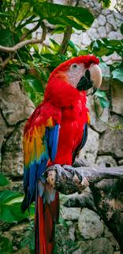

Max

Max es un perro muy juguetón y amistoso. Le gusta correr, jugar con pelotas y acompañar a su dueño a todas partes.
Kiwi

Kiwi es un ave pequeña que canta por las mañanas. Le gusta explorar, imitar sonidos y convivir con las personas.
Luna

Luna es una gatita tranquila, le encanta dormir y observar por la ventana. A veces es muy cariñosa y ronronea mucho.